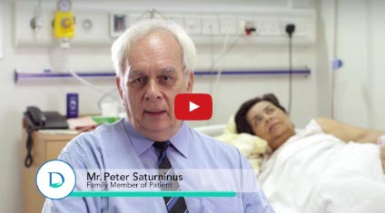
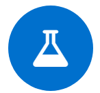

Patient's GuideWorld class patient care. Cutting edge medical technologies. Expert consultants. Durdans has it all. Find out why people from around the world trust Durdans Hospital to deliver medical excellence. |
|
Insurance CoversDurdans Hospital is closely connected with international insurance companies and provides our patients with a stress-free and convenient medical visit to our facility. Please get in touch with us for more information. |
Preventive Health CheckupsDurdans Hospital provide advanced health scans and offers individualised and comprehensive physical examinations. Preventive healthcare is of great importance, click below to find out more. |
Remarkable Recovery - Cardiac Patient84 year old Professor Lakshman Marasinghe went through an open heart bypass surgery recently and is feeling better than ever. Listen to this heartwarming account of his patient journey. |
|

|
Heart Patient TestimonialHope renewed – Patient recovers well from complicated heart surgery. Hear the heartwarming patient journey from his overjoyed niece. |

|
Elderly Heart Patient - Remarkable RecoveryThe first ever balloon expandable transcatheter aortic valve implantation (TAVI) – (without open heart surgery) was performed on an 82 year old patient with Ischemic Heart Disease and poor lung function. His recovery was fast, being able to even walk the next day. |

|
Eye Surgery Patient SpeaksThe daughter of eye surgery patient speaks about her experience at Durdans Hospital and recommends Durdans Hospital for high quality eye care. |

|
Singer's Smile Dazzles after Durdans Dental CareIshan De Lanerolle of popular singing duo the De Lanerolle Brothers, stepped into Durdans Dental Clinic recently for a laser teeth whitening. Listen to his experience. |

|
Mr Kumar RamaiahPatient speaks about his experience at Durdans Heart Centre. |

|
Shoulder Surgery Patient SpeaksPatient speaks about her experience at Durdans. |

|
Maldivian PatientInternational Patient speaks about his experience at Durdans. |

|
Mr Calum ReaichInternational Patient speaks about his experience at Durdans. |

|
Mrs Raina CaderPatient speaks about her treatment at Durdans. |
|  |
Mr Peter SaturninusPatient speaks about his experience at Durdans. |
Mr Ruzly HusseinPatient speaks about his experience at Durdans. |
|

|
Dr Kesava DevDr Dev talking about why choose Durdans for Cardiovascular surgeries. |
|  | |||
| PATIENTS TREATED - 2018 | NATIONALITIES | MEDICAL SPECIALITIES | LABORATORIES |